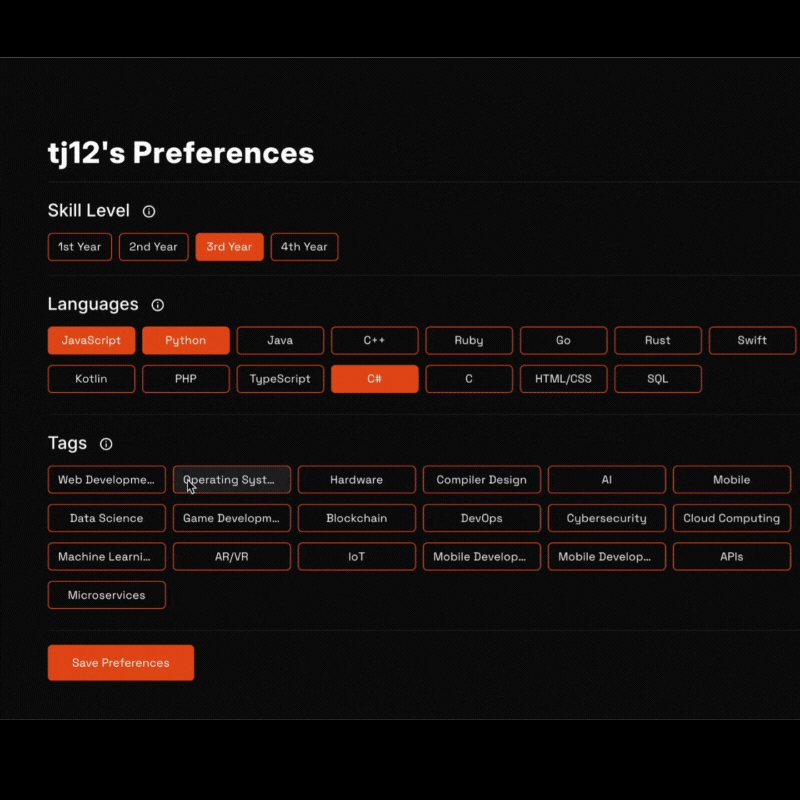
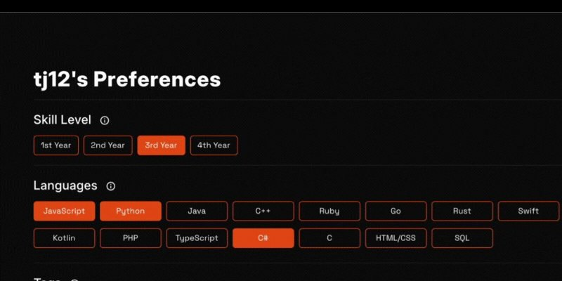

Swipe, not a list
Design

Because: A list of 200 repos is where students give up. One card asks for one small decision, and saving the good ones is a swipe.
GitHub has millions of repositories and no obvious place for a student to start. During the Salesforce Futureforce Tech Launchpad, our team of three built Branch Out: tell it your year, languages and interests, then swipe through matched repos with AI summaries.
Open source is the most open door into real engineering work, but search results favor huge, popular repos that aren't built for beginners.
Pick your year, languages and interests, then swipe through repos matched to you, each with a short AI summary.
Swipe through one repo at a time instead of scrolling a list of hundreds.
Students hear that contributing to open source is the best way to get real experience. Then they open GitHub and face millions of repositories with no way to tell which ones welcome beginners.
Search rewards stars, so the top results are the biggest, most intimidating projects.
Goal: get a student from "I want to contribute" to a repo that fits them in a few minutes.
We interviewed a few students from our Futureforce Tech Launchpad cohort, first through fourth year, about trying to make their first open source contribution.
Finding a first project should feel like browsing, not searching.
Drag through the real versions. Each one fixed what the last got wrong.

One call each for design, product strategy and tech.
Design
Because: A list of 200 repos is where students give up. One card asks for one small decision, and saving the good ones is a swipe.
Product strategy

Because: "Intermediate" means something different to everyone. Every student knows their year, so the onboarding question takes one second to answer honestly.
Tech

Because: READMEs are written for maintainers, not newcomers. I built the Gemini client that writes a short, plain-language summary for each repo, so students can judge fit without leaving the app.
My part of the app, from my own commits and pull requests.
Working through pull requests on a team of three taught me to keep changes small enough to review.
Matching the wireframe closely kept three people's work feeling like one product.
Track which matches students actually save, and tune the recommendations from that.
Go one step further than discovery: point students to a good first issue in each repo.